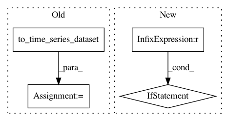

66db34cbcd90ada3fc8727097a413f440a0f53cc,tslearn/svm.py,TimeSeriesSVR,support_vectors_time_series_,#TimeSeriesSVR#Any#,432
Before Change
return 1
def support_vectors_time_series_(self, X):
X_ = to_time_series_dataset(X)
return X_[self.svm_estimator_.support_]
def fit(self, X, y, sample_weight=None):
sklearn_X, y = self._preprocess_sklearn(X, y, fit_time=True)
After Change
return 1
def support_vectors_time_series_(self, X=None):
if X is not None:
warnings.warn("The use of "
"`support_vectors_time_series_` is deprecated in "
"tslearn v0.4 and will be removed in v0.6. Use "
"`support_vectors_` property instead.")
check_is_fitted(self, "_X_fit")
return self._X_fit[self.svm_estimator_.support_]
@property
In pattern: SUPERPATTERN
Frequency: 3
Non-data size: 4
Instances
Project Name: rtavenar/tslearn
Commit Name: 66db34cbcd90ada3fc8727097a413f440a0f53cc
Time: 2020-05-22
Author: romain.tavenard@univ-rennes2.fr
File Name: tslearn/svm.py
Class Name: TimeSeriesSVR
Method Name: support_vectors_time_series_
Project Name: rtavenar/tslearn
Commit Name: cdaf93634b49f3a5749adbe359c2169c51f0a6fe
Time: 2018-12-30
Author: romain.tavenard@univ-rennes2.fr
File Name: tslearn/neighbors.py
Class Name: KNeighborsTimeSeriesMixin
Method Name: kneighbors
Project Name: rtavenar/tslearn
Commit Name: 66db34cbcd90ada3fc8727097a413f440a0f53cc
Time: 2020-05-22
Author: romain.tavenard@univ-rennes2.fr
File Name: tslearn/svm.py
Class Name: TimeSeriesSVC
Method Name: support_vectors_time_series_